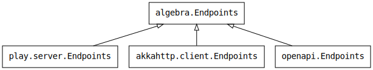
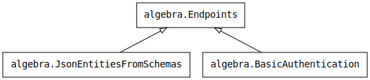

Design in a nutshell
You have seen in the quick start page that using the endpoints library consists in first defining abstract descriptions of HTTP endpoints, and then producing clients, servers, or documentation, by interpreting these descriptions. This page takes a step back to explain the underlying architecture of the library, and then provides some guidelines to embrace this design.
Descriptions and Interpretations
Here is an example of endpoint description:
import endpoints.{algebra, generic}
trait CounterEndpoints
extends algebra.Endpoints
with algebra.JsonEntitiesFromSchemas
with generic.JsonSchemas {
val currentValue: Endpoint[Unit, Counter] =
endpoint(get(path / "current-value"), ok(jsonResponse[Counter]))
}Endpoint descriptions are defined in terms of operations (e.g., endpoint, get, path, ok, etc.) provided by traits living in the endpoints.algebra package. These operations are all abstract. Furthermore, their return types are also abstract. Their purpose is only to define the rules for constructing and combining parts of HTTP endpoint descriptions. This is why they are called “algebra interfaces”, or just algebras.
For instance, consider the following truncated version of the Endpoints algebra:
package endpoints.algebra
trait Endpoints {
/** A request that uses the method GET and the given URL */
def get[A](url: Url[A]): Request[A]
/** A request that carries an `A` information */
type Request[A]
/** An URL that carries an `A` information */
type Url[A]
}
Here, the get method provides a way to define an HTTP request description from a URL description.
Since the Request[A] type is abstract, the only way to construct a value of that type is by calling a method that returns a Request[A], such as the method get, in the above code. For this reason, we say that the method get is a constructor for Request[A].
The Request[A] type models an HTTP request that carries an information of type A. From a client point of view, this A is what is needed to build a Request[A]. Conversely, from a server point of view, this A is what is provided by an incoming a Request[A].
You have seen in the “quick start” page that interpreters give semantics to the algebras. They do so by fixing their type members and implementing their methods accordingly. For instance, here is the semantics given to Request[A] by the Scala.js client interpreter:
package endpoints.xhr
trait Endpoints extends endpoints.algebra.Endpoints {
type Request[A] = js.Function1[A, XMLHttpRequest]
}
As previously said, from a client point of view we want to send requests and get responses. So, Request[A] has the semantics of a function that builds an XMLHttpRequest out of an A value.
Here is the semantics given by the Play-based server interpreter:
package endpoints.play.server
trait Endpoints extends endpoints.algebra.Endpoints {
type Request[A] = RequestHeader => Option[BodyParser[A]]
}
The aim of the endpoints.play.server.Endpoints trait is to provide a Play router for a given set of HTTP endpoints. So, a Request[A] is a function that checks if an incoming request matches this endpoint, and in such a case it returns a BodyParser[A] that decodes a value of type A from the request.
As you can see, each interpreter brings its own concrete semantic type for Request[A]. Client interpreters typically fix the Request[A] type to a function that takes an A as parameter. Conversely, server interpreters typically fix the Request[A] type to a function that returns an A. Can you guess what documentation interpreters do with this type parameter A? You can see the answer here. It is discarded because this type A models the information that is carried by an actual request, at run-time, but the documentation is static (so, there is no A value to deal with).
This technique has been described in details by Bruno C. d. S. Oliveira et al. [1]. Note that we use a variant discovered by Christian Hofer et al. [2], which uses type members rather than type parameters.
Summary
Algebras are traits that provide abstract type members and methods defining how to construct and combine endpoint descriptions.
Interpreters are traits that extend algebras, and give them a concrete meaning by fixing their type members and implementing their methods accordingly.
Modular Algebras
The separation between descriptions and interpretations provides one dimension of modularity: a same endpoint description can be interpreted with a client interpreter, a server interpreter, or documentation interpreter. Even more, the client and server stacks can be completely different (one can use Play framework while the other uses Akka, for instance). Here is a diagram illustrating the fact that multiple interpreters can be applied to a same algebra:

From that perspective, endpoint descriptions are equivalent to protobuf or Swagger files: they are machine-readable descriptors for a service. As a consequence, if you want to share a descriptor of your service with the outside world, one option is to publish the artifact containing the traits that provide your endpoint descriptions. Downstream users will then be able to turn these descriptions to a client of their choice by applying the interpreter of their choice. Of course, this works only if your users use Scala. For the rest of the world, you can distribute the descriptor produced by the OpenAPI interpreter.
The fact that algebras are defined in traits and that we can mix several traits together provides a second dimension of modularity: the algebra itself is modular. For instance, you have seen in the code example at the top of this page that two algebras were used together: algebra.Endpoints and algebra.JsonEntitiesFromSchemas. The diagram below shows a couple of algebras and their relations:

We say that the BasicAuthentication algebra enriches the Endpoints algebra with operations related to authentication.
The fact that algebras are modular is a double-edged sword. On one hand, having several algebra modules makes it possible for some interpreters to support only a subset of them. Consider for instance an algebra for describing Web Sockets. Not all HTTP clients or servers have a good support of Web Sockets, which means that not all HTTP clients or servers could interpret such an algebra. However, this is not a problem: that algebra module can be skipped, and the interpreters can focus on supporting only the modules that are relevant to them. Another benefit is that the algebras provided by the endpoints library can be extended outside of the library itself. Any application-specific concern can be introduced as another algebra without having to make the endpoints library aware of it. This point is illustrated in the authentication example.
On the other hand, a modular algebra means that you have to select the algebra modules to use before you can write endpoint descriptions. For instance, the provided Endpoints algebra is minimalist and is unlikely to be enough for your needs. Most probably, you will complete it with one of the JsonEntities algebras. Once you have settled on the algebra modules you want to use, you will have to find the matching interpreter modules. In general, interpreters follow a specific naming convention that should make this process easier.
Another consequence of the modularity of the algebras is that the library intentionally provides a minimal set of features. The aim is to cover most users’ needs in the main algebra, and let the community experiment with other algebra modules on their own before considering including them into the main algebra.
Summary
Algebras are modular. You select the algebras that provide the features you need, and you can even create your own algebras for more specific needs. The more algebras are used, the less interpreters can interpret them.
Next Step
Discover the hierarchy of algebras.